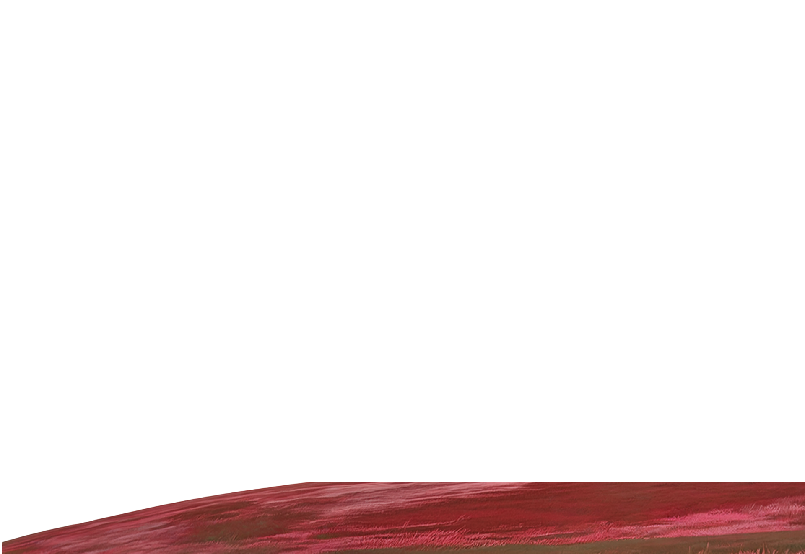
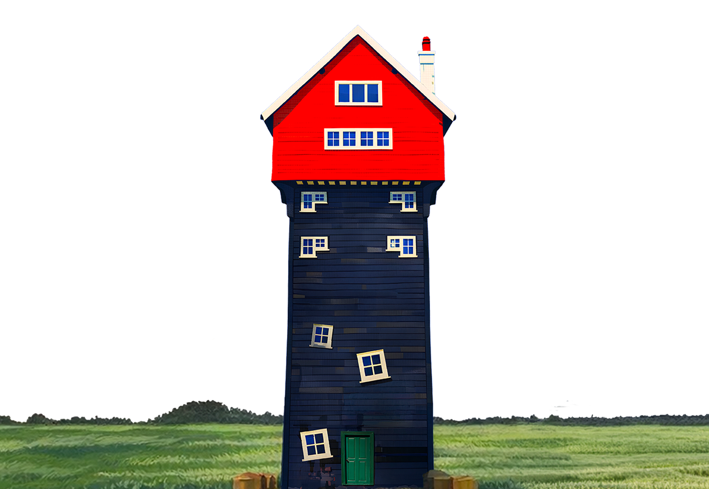

Maxime Cordy
William Utermohlen
2026
DANTE,


MUMMERS
À 31 ans, William commence une nouvelle partie de sa vie ainsi qu'une nouvelle série d'œuvres.
33 chants de l'Enfer
Entre 1964 et 1966, William Utermohlen peint le Dante Cycle, inspiré de l'Enfer de Dante. Alors que l'art des années 60 est optimiste, il choisit un sujet sombre et médiéval pour explorer la souffrance et la condition humaine.


Dante Cycle · 1964–1966
Dans cette série de peintures, William voulait explorer la souffrance et la condition humaine.
Dante Cycle · 1964–1966
L'Enfer de Dante lui permettait de représenter la douleur, la peur et la culpabilité de manière dramatique et visuelle.
Dante Cycle · 1964–1966
Avec ce cycle, Utermohlen combine un style médiéval réinterprété et une sensibilité moderne pour explorer la condition humaine.
Dante Cycle · 1964–1966
Interprétant ainsi Les souffrances invisibles, physiques comme mentales.
En 1969 William débute une des séries de tableaux les plus troublantes et intrigantes de sa collection.
"Mummers Cycle"
Ces tableaux mêlent mémoire personnelle, satire politique et anxiété face à l'Amérique de la fin des années 1960, notamment la Guerre du Vietnam et la présidence Nixon.


Les Mummers portent des costumes et incarnent des personnages stéréotypés.
sur la plupart des tableaux de cette serie, des personnages sont représentés triste, le regard vide.
Pour William, certains visages qu'il représente symbolisent le rôle social que chacun est amené à jouer.